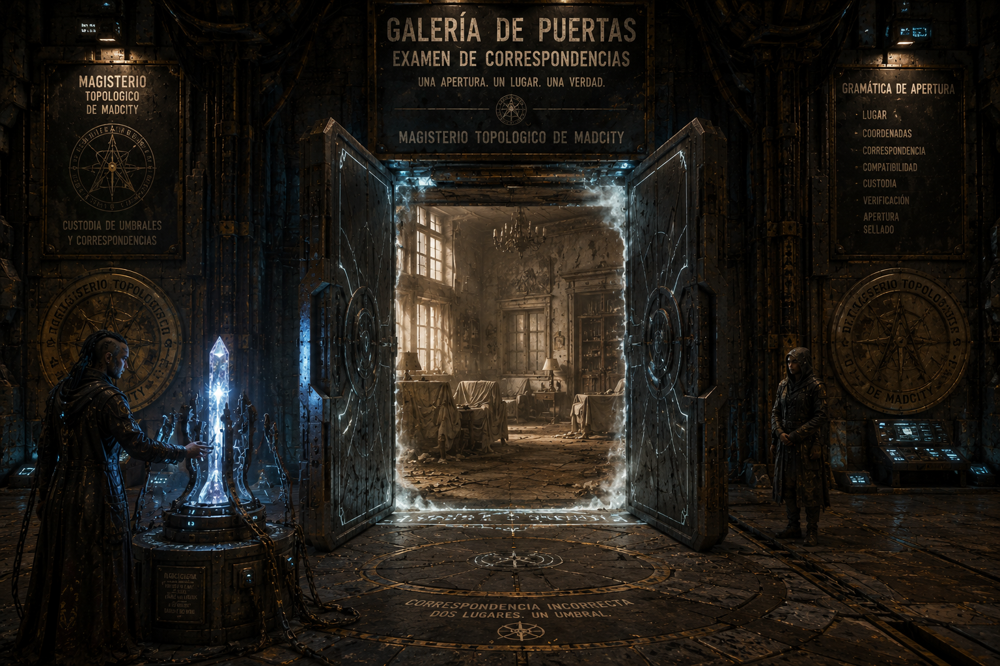

MÓDULO — Una licencia para abrir
Colección de one-shots de MadCity — episodio 5 de 6. Estado: BORRADOR, pendiente de playtest.
«Toda salida es libre cuando alguien ha pagado por la llave.»

La apertura fue técnicamente perfecta. La dirección, no.
Resumen operativo — léelo antes de dirigir
Premisa: en la Galería de Puertas de Capricornio, la aprendiz Ilo Sarn se examina hoy de la Prueba de Certificación en Camino de Portales 25 — el umbral que le permitiría, por fin, abrir portales completos por su cuenta. Su apertura es técnicamente perfecta. El problema es la dirección: la baliza de examen, manipulada de antemano, la envía a una vivienda sellada que no debería figurar en ningún recorrido autorizado. Varias personas cruzan en ambos sentidos antes de que la puerta se cierre. Nadie manipuló la baliza para hacer daño: alguien solo quería recuperar documentos y objetos de esa vivienda antes de un plazo administrativo que se agota.
Duración: una sesión de 4-6 horas. Escala local: una sala de examen, una vivienda sellada, un puñado de personas desplazadas y una institución que tiene que decidir cómo responde sin quemarse a sí misma.
Qué saben los PJ: que ha habido un incidente durante un examen oficial del Magisterio, que hay gente que no debería estar donde está, y que la Galería de Puertas ya está considerando suspender el lote entero de balizas — lo que afectaría otros servicios de tránsito dimensional del gajo.
Verdad del Narrador: Ilo no falló su examen. Alguien insertó una dirección antigua en la baliza. Esa persona, Ren Dovic, conocía el procedimiento pero no calculó que la dirección arrastraría también a residentes y objetos cercanos a la puerta, no solo a quien cruzara deliberadamente.
Objetivo inmediato: identificar y devolver a los desplazados, entender qué manipuló la baliza y por qué, y decidir qué le pasa a Ilo antes de que el Magisterio actúe por precaución institucional en vez de por los hechos.
Pregunta de fondo: ¿qué debe una institución a quien confió en su procedimiento, cuando el procedimiento fue sabotaje ajeno, no error propio?
Si nadie interviene: el Magisterio suspende cautelarmente la licencia de Ilo mientras dura la investigación — meses, quizás años, de carrera detenida por algo que no hizo. Los desplazados acaban siendo recuperados de todos modos, pero tarde y con una investigación mucho más costosa.
Desarrollo en cinco escenas
- La prueba perfecta — demostración, apertura incorrecta y cruces inesperados.
- ¿Quién abrió qué? — asegurar la sala, identificar desplazados y proteger a Ilo de una condena precipitada.
- Una dirección borrada — seguir la baliza, los permisos, los testigos y el motivo de quien la manipuló.
- La puerta vuelve — reapertura controlada o imprevista, búsqueda y conflicto con quien necesita recuperar algo.
- Licencia concedida o retirada — devolver personas, establecer responsabilidad y decidir qué aprende la institución.
Panel del Narrador — léelo antes de sentarte a la mesa
Reloj — la baliza conserva la dirección durante unas horas:
| Tiempo | Qué ocurre |
|---|---|
| H+0:00 | La apertura incorrecta ocurre durante el examen. Escena 1 empieza aquí. |
| H+0:30 | La sala queda asegurada; empieza el recuento de desplazados y el papeleo formal de incidencia. |
| H+1:00 | El comité de certificación se reúne para decidir si suspende cautelarmente a Ilo — su recurso formal, si se presenta, debe entrar antes de que termine esta reunión (ver Escena 2). |
| H+2:30 | Última ventana razonable para reabrir la dirección de forma controlada, con la baliza todavía calibrada. |
| H+3:00 | La dirección se pierde de la memoria de la baliza. Recuperar a cualquiera que siga dentro exige una investigación mucho mayor, fuera del alcance de este módulo. |
Cómo avanza el tiempo de ficción: no lo simules minuto a minuto — avanza el reloj cuando los PJ cambien de zona de la Galería, investiguen a fondo, o presenten un trámite formal.
- Hablar con un testigo o desplazado: 5-15 min.
- Moverse entre la sala de examen, el almacén de balizas y las oficinas administrativas: 5-10 min.
- Presentar un recurso o trámite formal: 15-20 min, más si faltan firmas o testigos.
- Reapertura controlada de la dirección (Escena 4): 20-30 min de preparación antes de cruzar.
Las tres partes, en una frase:
- Maestra Erea Sal → confirmar qué pasó de verdad antes de que el comité actúe por puro procedimiento.
- El comité de certificación (Dara Wint y Oskar Belen) → cerrar el expediente de forma defendible, cada uno a su manera.
- Ren Dovic → recuperar documentos y objetos familiares antes de que un plazo de subasta se los quite para siempre.
No hay villano. Ren no quiso desplazar a nadie — no calculó el alcance real de la dirección. El comité no es cruel: aplica un procedimiento diseñado para proteger a la ciudad, que en este caso concreto perjudica a alguien inocente. Ilo no cometió ningún error técnico.
La burocracia, en mesa — hazla concreta, con humor amable, no un chiste sobre incompetencia: cada requisito tiene una razón — razonable, absurda, interesada o heredada de cómo funciona MadCity — y al menos un funcionario debe demostrar que de verdad intenta ayudar dentro de un procedimiento que no siempre ayuda. Usa objetos y formularios reales, no "consigue tres sellos" en abstracto.
Textura administrativa (1d6, para ambientar sin planificar): úsala dos o tres veces a lo largo de las Escenas 2 y 3.
| d6 | Momento |
|---|---|
| 1 | Un formulario pide "número de extremidades para calzado reglamentario" — nadie ha actualizado la casilla en treinta años. |
| 2 | Oskar Belen encuentra, en los archivos, un permiso de hace 94 años para "cultivo de líquenes luminosos" en la vivienda sellada, nunca revocado formalmente. |
| 3 | Dara Wint rellena un impreso a mano porque el sistema oficial lleva media hora caído — y lo hace con una letra perfecta, por costumbre. |
| 4 | Un funcionario de otra ventanilla intenta derivar el caso a "gestión de fauna urbana", convencido de que es un problema distinto. |
| 5 | Alguien pregunta, muy en serio, si el incidente cuenta como "viaje de empresa" a efectos de dietas. Erea comenta, sin levantar la vista, que todavía está rellenando informes de otro cierre de emergencia — algo de una cabina de la Línea 25 que no llegó a su hora. |
| 6 | Un cartel administrativo, claramente desactualizado, sigue anunciando un procedimiento que ya no existe. |
Lo que ocurrió realmente
Verdad completa
Ren Dovic vivió, de niña, en la vivienda que hoy está sellada — precintada tras un litigio de herencia entre su familia y un pariente lejano que nunca se resolvió del todo. Con el litigio a punto de cerrarse por prescripción y los bienes de la vivienda a punto de subastarse, Ren necesitaba recuperar documentos y objetos concretos que probarían el derecho de su familia antes de que fuera demasiado tarde.
Conocía el procedimiento del Magisterio lo suficiente como para insertar la dirección antigua de la vivienda en una baliza de examen — sabía que un examen abriría una puerta real, aunque fuera solo un instante. Lo que no calculó fue que la dirección arrastraría también a personas y objetos cercanos a la puerta en ambos lados, no solo a quien cruzara con intención.
La Maestra Erea Sal y su comité no ordenaron nada de esto y no lo sabían. El procedimiento de suspensión cautelar existe para proteger a la ciudad de errores reales de los aprendices — un procedimiento razonable que, en este caso concreto, perjudica a alguien que no hizo nada mal.
Qué saben los PJ y qué no
Pueden llegar a saber todo lo anterior investigando. Lo que no deben poder resolver desde el principio es si Ren actuó por necesidad legítima o por puro interés — ambas cosas son ciertas a la vez, y eso se aclara con matices en la Escena 4.
Tono
Tenso pero con humor amable de fondo — la burocracia como fricción real, no como chiste fácil sobre incompetencia. Al menos un funcionario debe resultar entrañable por lo mucho que se esfuerza dentro de un sistema que no siempre coopera.
Reparto y relaciones
Ilo Sarn — la aprendiz examinada
Aspecto: uniforme de examen impecable hasta hace una hora, ahora con una mancha de tinta administrativa en la manga; mantiene la compostura por pura disciplina, aunque le tiemblan las manos.
PNJ interpretable (2-3 profesiones), sin ficha de combate relevante.
Camino de Portales 30% | Voluntad V45
- Quiere que se demuestre su inocencia técnica antes de que el comité decida por precaución.
- No oculta nada — está tan confundida como cualquiera sobre lo que ha pasado.
Maestra Erea Sal — examinadora de portales
Aspecto: formal, precisa, uniforme del Magisterio sin una arruga; una llave física le cuelga del cuello aunque su trabajo real abra cerraduras tecnológicas; protección reforzada en el brazo derecho, el que cruza primero. Menos severa de lo que sugiere a primera vista, aunque tarda en mostrarlo.
PNJ interpretable (6-7 profesiones), compartida con el resto de la colección — misma ficha ya publicada en El ascensor de los trece minutos.
F20/A30/P55/V60 | PV 11/11/11 | Bld 0 | Camino de Portales 70% | Investigación 55% | Voluntad alta (V60)
- Quiere confirmar qué pasó de verdad antes de que el comité actúe solo por procedimiento.
- Respeta prudencia, preparación y reconocer los límites propios.
- Falla previsible: confía demasiado en el procedimiento cuando alguien conoce el procedimiento y lo manipula — la misma falla que ya mostró en Ascensor, coherente con su carácter.
Dara Wint y Oskar Belen — comité de certificación
Aspecto de Dara: impecable, letra perfecta incluso rellenando formularios a mano, cita el reglamento de memoria sin sonar nunca hostil — cree de verdad que el procedimiento protege a la gente.
Aspecto de Oskar: desbordado por la carga de trabajo, pero de los que se quedan media hora tarde buscando una excepción aplicable en vez de cerrar el expediente sin más.
PNJ funcionales (2-3 profesiones cada uno). Ninguno es incompetente ni cruel — ambos intentan hacer bien su trabajo dentro de un sistema imperfecto.
Gestión/Procedimiento 55% (Dara) | Investigación administrativa 45% (Oskar) | sin ficha de combate.
- Dara quiere cerrar el expediente de forma defendible, siguiendo el procedimiento al pie de la letra.
- Oskar quiere encontrar la excepción correcta antes de aplicar la sanción más dura por defecto.
- Sin PJ: el comité vota suspender cautelarmente a Ilo a H+1:00, salvo que alguien presente un recurso formal antes.
Ren Dovic — quien manipuló la baliza
Aspecto: ropa práctica de quien ha pasado semanas entre archivos y despachos, una carpeta gastada de tanto abrirla y cerrarla, mirada de quien ha calculado un riesgo y ahora no está segura de haberlo calculado bien.
PNJ interpretable (3 profesiones). Antigua residente de la vivienda sellada; necesita documentos concretos antes de que expire un plazo de subasta por prescripción de un litigio de herencia.
F20/A30/P45/V40 | PV 12/12/12 | Bld 0 | Tecnología (sistemas de balizas) 50% | Social 40%
- Quiere recuperar documentos y objetos familiares concretos antes del plazo de subasta.
- No pondrá en peligro deliberado a nadie más — está aterrada por las consecuencias de lo que ya ha causado.
- Sin PJ: intenta una segunda manipulación de baliza por su cuenta antes de H+2:30, con más riesgo de fallar y quedar expuesta.
Cato Ime y Bettina Corsi — desplazados con nombre
PNJ funcionales (1 profesión cada uno), sin ficha de combate.
- Cato Ime: cruzó por curiosidad al ver la puerta abierta; pragmático, más molesto por perder tiempo que asustado.
- Bettina Corsi: vecina de la vivienda sellada, cruzó sin darse cuenta desde el otro lado; desorientada, cree al principio que es un robo en curso.
Otros dos desplazados
Grupo funcional, sin ficha propia — reaccionan con una mezcla razonable de confusión y indignación administrativa.
Máquina doméstica desplazada
Un autómata de mantenimiento doméstico, atravesado desde la vivienda sellada, sigue ejecutando su programación antigua sin adaptarse al entorno — ofrece té a quien se le acerque, insiste en "reportar la ausencia de los propietarios" a cualquiera con autoridad aparente. No hostil, Detección 30%, puede confundirse y bloquear pasillos sin darse cuenta.
Relaciones para el Narrador
- Erea confía en Ilo profesionalmente, pero no puede saltarse el procedimiento sin una razón formal — de ahí que un recurso presentado a tiempo por los PJ tenga peso real.
- Dara y Oskar se respetan, aunque discrepan en cómo aplicar el mismo reglamento.
- Ren conocía a Bettina de niña, cuando ambas vivían en el mismo edificio — puede ser un punto de contacto humano si alguien lo descubre.
- Ilo no sabe nada de Ren ni de la manipulación — es tan víctima del procedimiento como cualquiera de los desplazados.
Lugares necesarios
Sala de examen: donde ocurrió la apertura incorrecta. Cámara de entrada sucesiva antes de la propia sala de portal, contrapesos y sellos de emergencia visibles en el marco, cámaras de seguridad espacial, la baliza dañada, restos del procedimiento de examen.
Almacén de balizas: pasillos compartimentados a propósito — nada de línea directa entre el exterior y ninguna baliza activa — registros de mantenimiento y de asignación de direcciones.
Oficinas administrativas: donde se gestiona el expediente de Ilo y donde Dara y Oskar trabajan.
La vivienda sellada: al otro lado de la dirección borrada — polvorienta, detenida en el tiempo desde el litigio, con los objetos que Ren necesita recuperar.
Las cinco escenas
Cada escena está pensada para dirigirse sola, sin buscar en otra parte del documento durante el juego — las fichas relevantes están repetidas dentro.
Escena 1 — La prueba perfecta
Atmósfera:
La sala de examen huele a ozono y a papel oficial. Ilo traza el gesto exacto, la baliza responde exactamente como debería — y la puerta que se abre no es la que nadie esperaba. Durante unos segundos, dos lugares distintos comparten el mismo umbral.
Qué está ocurriendo: la apertura, técnicamente perfecta, conduce a una vivienda sellada. Varias personas cruzan en ambos sentidos antes de que se cierre.
PNJ presentes, con su intención inmediata:
- Ilo Sarn — conmocionada, insiste en que hizo todo bien (Aspecto y ficha: ver Reparto).
- Maestra Erea Sal — toma el control de la sala de inmediato, prioriza contar cabezas antes que buscar culpables (Aspecto y ficha: ver Reparto).
- Cato Ime y Bettina Corsi, entre los desplazados — confundidos, cada uno a su manera (fichas: ver Reparto).
- La máquina doméstica, atravesada también — ofreciendo té a quien se le acerque (ficha: ver Reparto).
Qué saben / qué dicen: nadie sabe todavía que la dirección fue manipulada — solo que algo salió mal con un examen que debería haber sido rutinario.
Obstáculos y acontecimientos: usa la Textura administrativa (1d6, arriba) una vez si hace falta llenar el momento.
Tiradas posibles (ninguna obligatoria):
- Investigación o Camino de Portales (examinar la baliza dañada): éxito → detectas que la dirección fue insertada manualmente, no generada por el examen; fallo → confirmas el fallo, sin identificar la causa.
- Alerta (contar y observar a los desplazados): éxito → identificas correctamente a los cuatro desplazados y notas que uno de los "examinados" no encaja del todo (Ren, si se coló entre la confusión); fallo → recuento incompleto, alguien queda sin identificar por ahora.
Si los PJ no hacen nada: Erea asegura la sala por su cuenta y empieza el procedimiento estándar, sin la ventaja de la información que un PJ atento podría aportar.
Cómo termina: el grupo tiene una primera pista sobre la manipulación y sabe que hay desplazados que devolver.
Después: cuánta información reunieron aquí condiciona si llegan a la Escena 2 con ventaja ante el comité.
«Con este historial, la certificación es automática. ¿Alguien puede explicarme por qué la sala huele a otra casa?»
Escena 2 — ¿Quién abrió qué?
Atmósfera:
Pasillos administrativos, formularios en cascada, y un reloj de pared que de repente importa mucho más de lo que debería. En algún despacho, alguien está a punto de firmar algo que va a decidir el resto de la carrera de Ilo.
Qué está ocurriendo: aseguramiento formal del incidente, identificación de los desplazados, y la amenaza administrativa inmediata: el comité se reúne para decidir si suspende cautelarmente a Ilo.
PNJ presentes, con su intención inmediata:
- Dara Wint y Oskar Belen — gestionan el expediente, cada uno a su manera (Aspecto y ficha: ver Reparto).
- Erea, si sigue presente — puede orientar sobre qué recurso formal existe, sin poder presentarlo ella misma en nombre de Ilo.
- Ilo, esperando noticias — cada vez más nerviosa.
Qué saben / qué dicen: existe un "recurso de garantía procedimental" que puede detener la suspensión cautelar si se presenta con dos testigos y una objeción escrita antes de que termine la reunión del comité (ver Reloj).
Tiradas posibles:
- Investigación o Social (encontrar y entender el procedimiento de recurso correcto): éxito → localizas el trámite exacto y qué requiere; fallo → encuentras un trámite relacionado pero no el correcto, perdiendo tiempo.
- Social (conseguir que Oskar ayude activamente a interpretar una excepción a favor de Ilo): éxito → Oskar encuentra una lectura del reglamento que juega a favor; fallo → Oskar quiere ayudar pero no encuentra base suficiente todavía.
- Liderazgo o Social (presentar el recurso formal ante Dara con los testigos y la objeción en regla): éxito → la suspensión cautelar se detiene, ganando tiempo para investigar; fallo → Dara aplica el procedimiento tal cual, y la suspensión sigue adelante mientras se investiga.
Si los PJ no hacen nada: el comité suspende cautelarmente a Ilo a H+1:00.
Cómo termina: queda decidido, de momento, si Ilo sigue certificada mientras dura la investigación o si su licencia queda en suspenso.
Después: el resultado aquí no cierra el caso — solo determina la presión con la que se juega el resto del módulo.
Escena 3 — Una dirección borrada
Atmósfera:
Registros de mantenimiento, permisos que nadie ha mirado en décadas, y un nombre que empieza a repetirse en los márgenes de varios documentos distintos: alguien que conocía este sistema mejor de lo que debería un simple visitante.
Qué está ocurriendo: investigación de la baliza, los permisos de la vivienda sellada, y los testigos, para llegar hasta Ren Dovic y entender su motivo.
PNJ presentes, con su intención inmediata:
- Oskar Belen, si coopera desde la Escena 2 — ayuda a bucear en archivos antiguos, con genuino interés en entender qué pasó.
- Bettina Corsi, si se le pregunta con calma — recuerda a Ren de niña, aunque no la reconoce de inmediato con el nombre actual.
Qué saben / qué dicen: los registros conectan la dirección con un litigio de herencia sin resolver y un plazo de subasta que se acerca.
Tiradas posibles:
- Tecnología (analizar la baliza manipulada técnicamente): éxito → identificas el método usado y una firma de acceso que apunta a Ren; fallo → confirmas la manipulación, sin identificar a la responsable todavía.
- Investigación (revisar los registros de litigio y permisos de la vivienda): éxito → descubres el plazo de subasta y el litigio de herencia como motivo probable; fallo → información parcial, suficiente para seguir pero no para actuar con certeza.
- Social (hablar con Bettina sobre la vivienda y sus antiguos residentes): éxito → obtienes el nombre de la familia de Ren y una pista de dónde localizarla; fallo → recuerdos vagos, sin nombre claro.
Si los PJ no hacen nada: Ren intenta una segunda manipulación de baliza por su cuenta antes de H+2:30, con más riesgo de fallar y quedar expuesta de forma más dura.
Cómo termina: el grupo sabe quién manipuló la baliza y por qué, y decide cómo abordarla antes de que se acabe el tiempo.
Después: el nivel de comprensión conseguido aquí sobre el motivo de Ren condiciona el tono de la Escena 4 — confrontación o negociación.
Escena 4 — La puerta vuelve
Atmósfera:
La baliza, recalibrada, abre la dirección una vez más. Al otro lado, polvo suspendido en la luz, muebles cubiertos, y una mujer con una carpeta gastada que se gira demasiado rápido al oír pasos.
Qué está ocurriendo: reapertura de la dirección (controlada por el grupo, o forzada por Ren si actuó primero) hacia la vivienda sellada.
PNJ presentes, con su intención inmediata:
- Ren Dovic — buscando sus documentos, dispuesta a explicarse si se le da la oportunidad en vez de tratarla como una amenaza (Aspecto y ficha: ver Reparto).
- Cualquier desplazado que quedara sin recuperar de la Escena 1.
Qué saben / qué dicen: Ren puede confirmar la verdad completa de su motivo si se le escucha con calma — el litigio, el plazo de subasta, y su cálculo erróneo sobre el alcance de la dirección.
Tiradas posibles:
- Social o Empatía (convencer a Ren de colaborar en vez de intentar huir con lo que ha encontrado): éxito → coopera, entrega lo que ha recuperado y explica todo; fallo → duda, pero no ataca ni se resiste violentamente si se le trata con respeto.
- Investigación (localizar los documentos concretos que Ren necesita antes que ella, o junto a ella): éxito → encontráis lo que prueba el derecho de su familia; fallo → la vivienda es grande y el tiempo apremia — se pierde parte de lo buscado.
- Tecnología (estabilizar la dirección para una salida segura de todos): éxito → todos cruzan sin complicaciones; fallo → la dirección empieza a inestabilizarse antes de tiempo, obligando a salir con prisa pero sin daño real.
Si los PJ no hacen nada: la dirección se pierde a H+3:00 con Ren todavía dentro si no ha salido antes — perdida para la investigación, aunque no necesariamente en peligro real.
Cómo termina: Ren queda identificada y, con o sin sus documentos, la situación queda lista para resolverse formalmente en la Escena 5.
Después: cómo trataron a Ren aquí condiciona qué desenlaces están disponibles.
Escena 5 — Licencia concedida o retirada
Atmósfera:
De vuelta en la Galería, con los desplazados devueltos y la dirección cerrada para siempre. Queda una firma pendiente: la que decide si Ilo sigue siendo Maestra de Portales certificada, y qué le pasa a Ren.
Qué está ocurriendo: con la emergencia resuelta, el comité (y la mesa) deciden la responsabilidad final y qué aprende la institución.
PNJ presentes: Erea, Dara, Oskar, Ilo, Ren (si fue localizada y no huyó), los desplazados como testigos.
Qué saben / qué dicen: la verdad completa puede presentarse formalmente al comité, negociarse en privado con Ren, o gestionarse de forma incompleta — ninguna opción es automáticamente correcta.
Tiradas posibles: Social o Liderazgo para inclinar la decisión final; ninguna sustituye la decisión de la mesa.
Si los PJ no hacen nada: el comité cierra el expediente con la información que tenga, probablemente perjudicando a Ilo si no se presentó el recurso a tiempo en la Escena 2.
Cómo termina: queda decidido el estado final de la licencia de Ilo y qué le pasa a Ren.
Después: ver Desenlaces combinables para las consecuencias a medio plazo.
Textos para leer
La apertura incorrecta
La sala de examen huele a ozono y a papel oficial. Ilo traza el gesto exacto, la baliza responde exactamente como debería — y la puerta que se abre no es la que nadie esperaba.
Los archivos
Registros de mantenimiento, permisos que nadie ha mirado en décadas, y un nombre que empieza a repetirse en los márgenes de varios documentos distintos.
La vivienda sellada
Polvo suspendido en la luz, muebles cubiertos, y una mujer con una carpeta gastada que se gira demasiado rápido al oír pasos.
Pistas e información
| Fuente | Revela | Vía alternativa |
|---|---|---|
| Baliza dañada (Escena 1) | Dirección insertada manualmente, no generada por el examen | Recuento de desplazados que detecta a Ren entre ellos |
| Trámite de recurso (Escena 2) | Existe un recurso formal que detiene la suspensión cautelar | Preguntar directamente a Erea qué opciones hay |
| Análisis técnico de la baliza (Escena 3) | Firma de acceso que apunta a Ren | Registros de litigio y permisos de la vivienda |
| Hablar con Bettina Corsi (Escena 3) | Nombre e identidad de Ren, antigua vecina | Archivos administrativos de la vivienda sellada |
| Hablar con Ren (Escena 4) | Verdad completa: litigio, plazo de subasta, cálculo erróneo | Documentación recuperada de la propia vivienda |
Recompensas y gastos
La misión no debe dejar a los PJ con pérdidas netas por gastos o equipo dañado — cúbrelo antes de repartir nada más.
Recompensa económica: entre 200 y 400 PC por PJ, pagados por el Magisterio como gestión de incidencia resuelta — un pago administrativo, no un contrato corporativo.
Beneficios alternativos: relación con Erea Sal reforzada; acceso o trato preferente en trámites futuros de la Galería de Puertas; gratitud de Ilo, gestionable como favor pequeño más adelante; contacto con Ren si el desenlace lo permite.
Desenlaces combinables
Licencia confirmada sin mancha. El comité reconoce formalmente que Ilo no cometió ningún error. Su certificación queda limpia, y el caso se documenta como sabotaje externo.
Licencia confirmada con nota. Ilo mantiene su certificación, pero el expediente incluye una nota sobre "vulnerabilidad del procedimiento de examen" — no la perjudica directamente, pero queda registrada.
Licencia suspendida temporalmente. Si los PJ no lograron el recurso a tiempo, Ilo pasa un periodo de suspensión antes de que la verdad complete la investigación — injusto, pero no permanente.
Ren sancionada formalmente. Enfrenta consecuencias reales por la manipulación, incluso si su motivo era comprensible — el Magisterio no puede ignorar el método, aunque entienda la necesidad.
Ren y su familia recuperan su derecho. Si consiguió los documentos, su reclamación de herencia avanza — combinable con cualquier grado de sanción por el método usado.
Continuidad opcional
- Versión independiente: no exige haber jugado ningún otro módulo de la colección.
- Si se han jugado otros episodios: la relación con Erea modifica la recepción del grupo en el Magisterio en futuros encuentros de la colección.
Ejemplo de puerta abierta: Erea necesita verificar una ruta de portal relacionada en otro contexto — enlace natural hacia cualquier otro DLC con presencia del Magisterio, sin obligar a aceptarlo.
Las Dos Voces
Voz satírica sobre una puerta administrativa:
«Toda salida es libre cuando alguien ha pagado por la llave.»
Respuesta estoica en el marco interior:
«Abrir no siempre libera. Cerrar no siempre protege.»
Una intervención, no más — ni oráculo ni pista indispensable.
Límites de este módulo
- No hacer que un aprendiz anterior a Camino de Portales 25 abra portales completos — Ilo se examina precisamente de ese umbral.
- No alterar costes, Parpadeo, Alma, PD ni PV — el examen y la manipulación se resuelven con las reglas de tiradas y enfrentadas vigentes.
- No revelar ni insinuar el secreto de Proctor.
- La burocracia debe tener humor amable, no convertir a todos los funcionarios en incompetentes — al menos uno (Oskar) debe demostrar ayuda genuina dentro del sistema.
Resumen para dirigir
Reloj hasta que la baliza pierde la dirección, con tiempos de desplazamiento fijados en el Panel del Narrador. Cinco escenas autosuficientes: examen fallido → aseguramiento y amenaza administrativa → investigación de archivos → reapertura y confrontación → decisión institucional, cada una con atmósfera, tiradas con éxito/fallo concretos y transición a la siguiente. Ningún requisito burocrático es arbitrario: cada uno tiene una razón, y al menos una persona dentro del sistema intenta de verdad ayudar.
MadCity — colección de one-shots. Comparte lugares, PNJ y dirección visual con el resto de la colección, sin formar una campaña obligatoria.